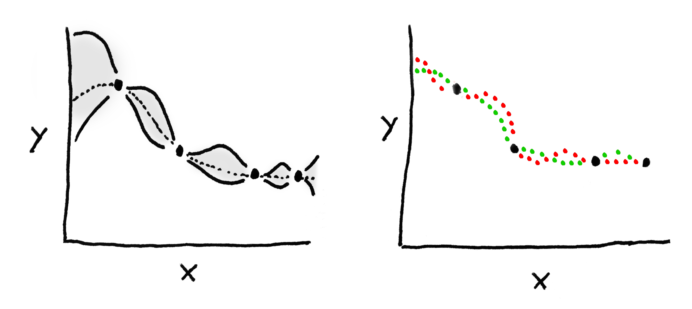

Gaussian Process Regression
Intro
I've spent a lot of time recently reading (and using) gaussian processes ($GP$). I think they're really cool, and wanted to take the time to write up a short, easily accessible tutorial on them. This should serve as a valuable exercise in information distillation for me. I also hope that prospective readers will learn to find these ideas as fun, beautiful, and intuitive as I do.
I'm going to start by telling you what a $GP$ looks like with broad scketches. I'm then going to go back and explain things from the beginning. What's a multivariate Gaussian? Bayesian regression? Once we have these two pieces sketched out and colored to some degree of detail, I'm going to go back over $GP$ and how to use it for regression. I'll also layer on a little more information so you understand it a little more deeply. Hopefully some of this'll make sense and you'll have learned something. So let's get to it!
Gaussian Processes
A $Gaussian\ Process$ is an extension of the multivariate gaussian to infinite dimensions. This means that you can give it a vector ${\bf x} \in \mathbb{R}^n$ (for any $n$) and the process will spit back a new vector ${\bf y} \in \mathbb{R}^n$. Every component of ${\bf y}$ represents the probability of observing $x_i$ according to some gaussian living in dimension $i$.
Since $GP$'s act like probability distributions, you can do more than just ask "what's the probability of this ${\bf x}$ I have here?" You can sample the $GP$ to draw brand new vectors from the "distribution". What's the dimensionality of these samples? Whatever you want. So if we take an $infinite$-dimensional sample from the $GP$, we're effectively drawing an entire functions from a gaussian-like distribution! If you don't see this, note that every possible $d \in \mathbb{R}$ can be deterministically mapped to some element of the infinite-dimensional vector we just drew. Boom. That's a function.
This is why some people like to think of $GP$'s as not just a distribution over random vectors but also over random $functions$. To avoid confusion, though, I should be clear about what a random function is. A random function is NOT a function whose outputs are stochastic in any way. A random function is one that's chosen from a set of functions probabalistically. Once selected, this function has deterministic outputs for each input.
To get some intuition for all of this, let's look at a $GP$:

The data are one-dimensional, and we want to predict the value of $y$. On the left we see the distribution of functions that the $GP$ thinks might explain these data. All the shaded bits correspond to the 95% CI of the distribution, and the dotted line is the mean of the process. The lines we sample from this $GP$ are most likely to live in that shaded area. On The right I've drawn two functions that were sample from the distribution on the left.
The last thing I'll say about $GP$'s during this prelude is that they have some nice properties which allow them to be fit into a Bayesian regression framework quite easily. I.e. we can use a $GP$ to come up with predictions for some unknown test points, based on a bunch of known training points. More on this later.
Multivariate Gaussians
TODO PICTURES!!!!
A random variable ${\bf x} \in \mathbb{R}^n$ follows a multivariate normal distribution with mean ${\bf \mu} \in \mathbb{R}^n$ and covariance $\Sigma$ if,
$$ p({\bf x}; {\bf \mu}, \Sigma) = \frac{1}{(2\pi)^{n/2}\vert\Sigma\vert^{1/2}} exp \left(-\frac{({\bf x} - {\bf \mu})^{T} \Sigma^{-1} ({\bf x} - {\bf \mu}) }{2} \right) $$
We also say ${\bf x} \sim N(\mu, \Sigma)$. It's a pretty straightforward generalization of the traditional gaussian I'm sure you're familiar with. A few properties to note, though:
- The marginal densities of the multivariate are gaussian as well. For example, since ${\bf x} \sim N(\mu, \Sigma)$, then $x_1 \sim N(\mu_1, \Sigma_{11})$.
- $\Sigma$ describes the covarience between each pair of features. So it's symmetric, and all it's values are positive (symmetric positive definite).
- The conditional densities are gaussian.
- Sum of gaussians is gaussian.
Bayesian Regression
Reading List:
- http://cs229.stanford.edu/section/cs229-gaussian_processes.pdf
- http://videolectures.net/gpip06_mackay_gpb/
- https://arxiv.org/pdf/1505.02965v2.pdf
- http://www.gaussianprocess.org/gpml/chapters/RW2.pdf